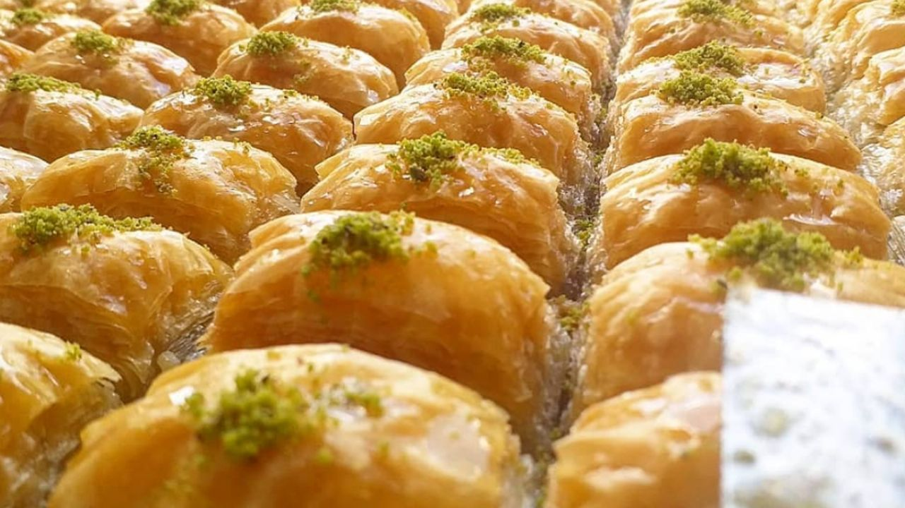
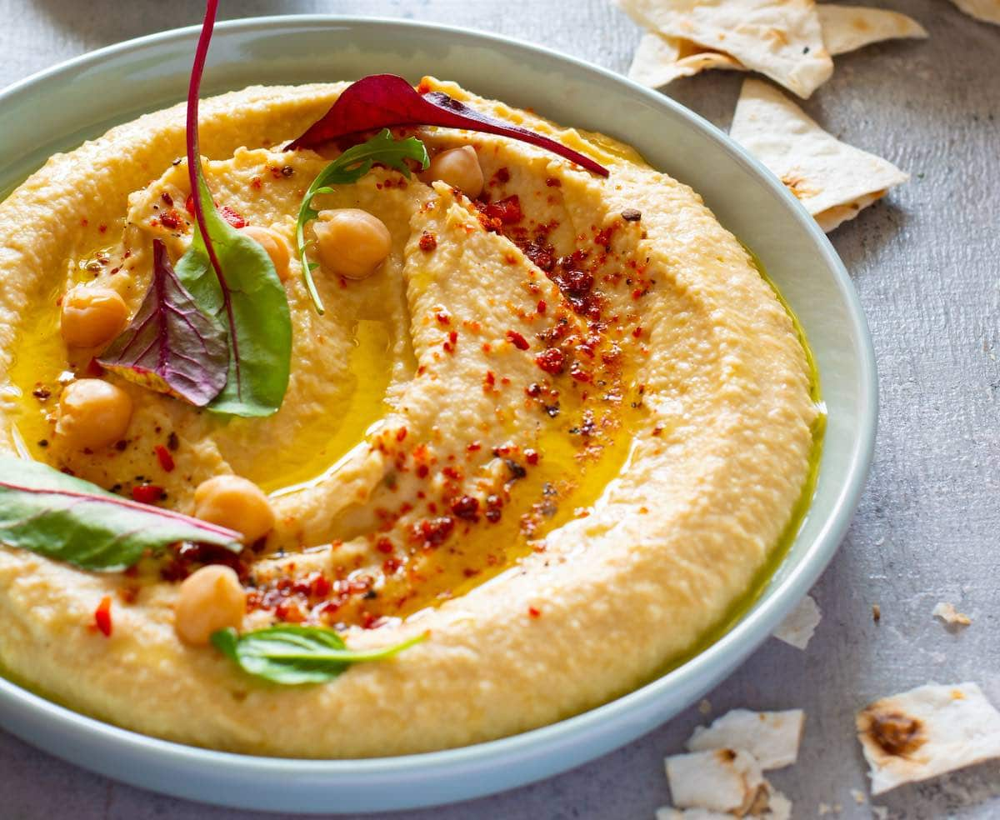

Fatay vegano
Aprende a hacer las mejores empanadas árabes, versión vegana.
View Profile

Baklava
Aprende a hacer el típico postre árabe.
View Profile

Hummus
Aprende a hacer un delicioso hummus de garbanzos.
View Profile
Pan de Pita
Aprende a hacer el famoso pan árabe.
View Profile